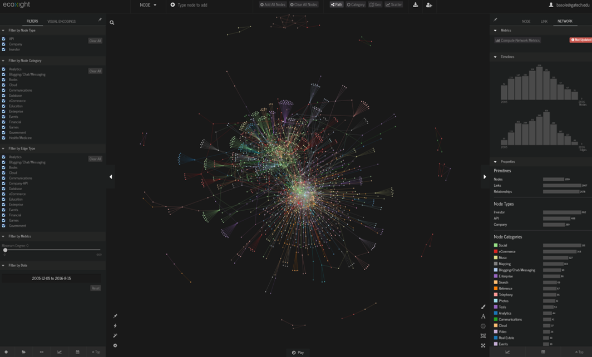

Rahul C. Basole, Arjun Srinivasan, Hyunwoo Park, and Shiv patel
The term ecosystem is used pervasively in industry, government, and academia to describe the complex, dynamic, hyperconnected nature of many social, economic, and technical systems that exist today. Ecosystems are characterized by a large, dynamic, and heterogeneous set of geospatially distributed entities that are interconnected through various types of relationships. This study describes the design and development of ecoxight, a Web-based visualization platform that provides multiple coordinated views of multipartite, multiattribute, dynamic, and geospatial ecosystem data with novel and rich interaction capabilities to augment decision makers ecosystem intelligence. The design of ecoxight was informed by an extensive multiphase field study of executives. The ecoxight platform not only provides capabilities to interactively explore and make sense of ecosystems but also provides rich visual construction capabilities to help decision makers align their mental model. We demonstrate the usability, utility, and value of our system using multiple evaluation studies with practitioners using socially curated data on the emerging application programming interface ecosystem. We report on our findings and conclude with research implications. Collectively, our study contributes to design science research at the intersection of information systems and strategy and the rapidly emerging field of visual enterprise analytics.